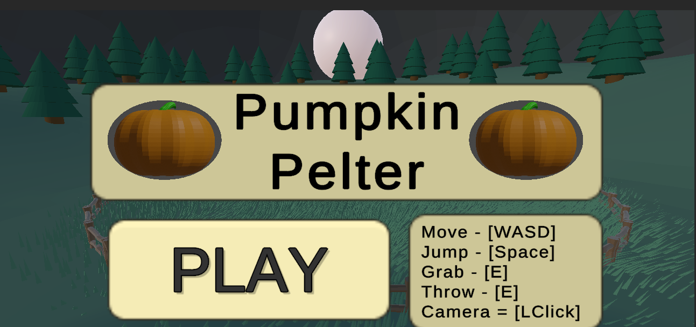

Pumpkin Pelter
Concept
Pumpkin Pelter was my solo submission for the wolverinesoft Mega jam in Fall 2023. The player must fend off magic haunted pumpkins using small pumpkins as throwable projectiles. It features 8 different waves of different enemies, each with different attack patterns, with the last wave being a final boss fight. The overall gameplay was roughly inspired by the boss fights featured in the super mario galaxy games.
All of the 3d models were created by me using blender. All animations and attack patterns are controlled and dictated via scripts. The grass uses compute shaders and gpu instancing to prevent it from having a significant performance impact. The sound effects were made using JSFXR and the music was taken from a free-to-use archive.
Unfortunetally, this project was created using an older version of Unity that isn't working for a web build. It can be downloaded for Windows on My Itch Page.
Screenshot from pumpkin-pelter
Controls
- WASD to Move
- Space to jump
- E to grab Pumpkins
- E to throw Pumpkins
- Click+Drag to move camera